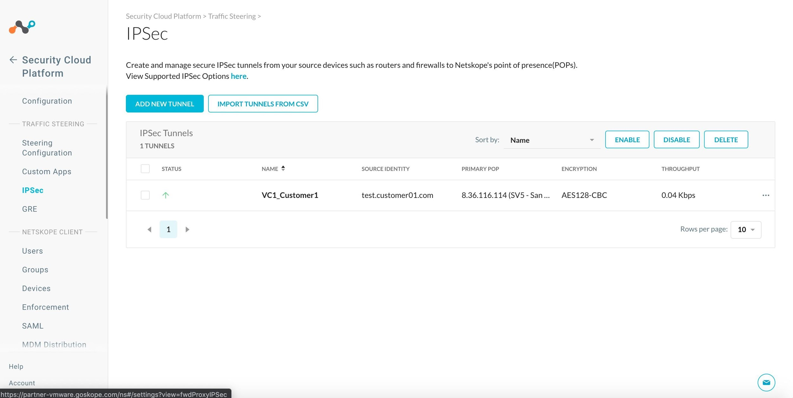
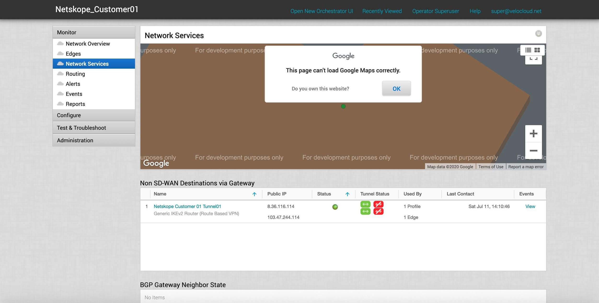
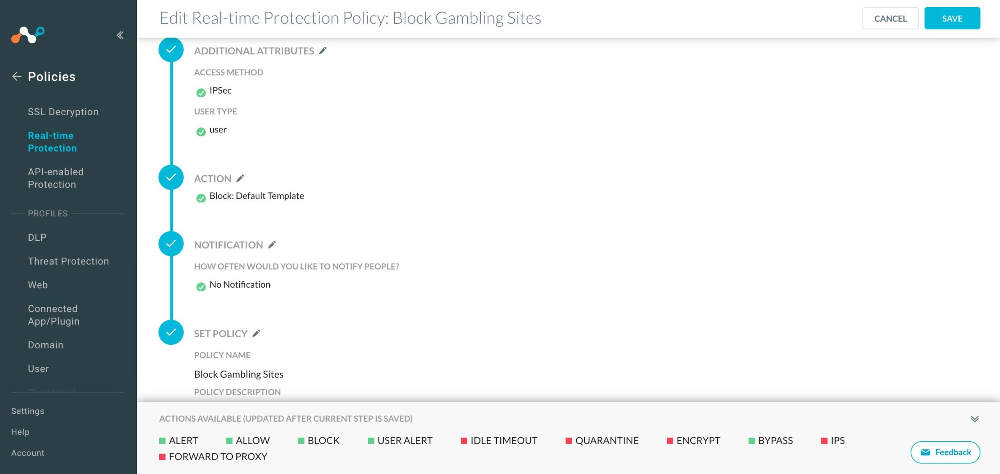
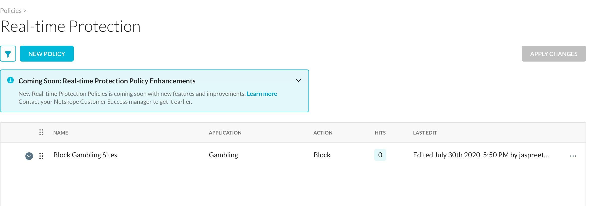

Configure IPSec from the VeloCloud Orchestrator to a Netskope POP
Configuring Netskope and VeloCloud requires four primary steps to achieve a working configuration. The steps are:
Configure Tunnel credentials in the Netskope tenant.
Configure an NSD tunnel from a gateway on the VeloCloud Orchestrator.
Verify connectivity.
Test Security policies in the Netskope UI.
Configure Tunnel Credentials in the Netskope UI
Log in to your Netskope tenant.
Go to the Settings > Security Cloud Platform > Traffic Steering > IPSec.
 Click Add New Tunnel.

Enter and select these parameters:
Tunnel Name: Enter a name that makes sense to your topology.
Source IP address: As an added security measure, you can restrict this tunnel to only this source IP. Enter the source (public) IP address that the VeloCloud Gateway will use to originate the tunnel. The source IP address must be static.
Source Identity: Enter the tunnel source identity with the FQDN field that is uniquely assigned to the VeloCloud Orchestrator. The source identity is used as the IKE identifier on the router that originates the tunnel.
Primary and Failover POPs: Select the POPs closest to you from the dropdown lists. Copy the IP addresses for the POPs. Note the IP addresses for later use in the configuration of the Velocloud Orchestrator.
Encryption cipher type: Select AE128-CBC from the dropdown list.
Pre-shared key: Enter a pre-shared key that both sides of the tunnel will use to authenticate one another. Must be unique for each tunnel.
Max bandwidth limit (in Mbps): Select up to 250 Mbps from the dropdown list.
Click Add.
The new tunnel appears on the IPSec page. Click the checkbox for your new tunnel and click Enable. The Status column will show a green up arrow after you've completed the VeloCloud configuration.
Configure an NSD Tunnel from a Gateway on the VeloCloud Orchestrator
Log in to the VeloCloud Orchestrator and verify that your VeloCloud Edge Appliance is online.

Configure the Velocloud Non-SD-WAN Tunnel via the Gateway. Go to Configure > Network Services > Non SD-WAN Destinations via Gateway. Click New and then enter and select the initial parameters:
Tunnel Name: Enter a name that makes sense to your topology.
Type: Select Generic IKEv2 Router (Route Based VPN) from the dropdown list.

Public IP: Enter the Primary Netskope POP IP address for the Primary Gateway, and the Failover POP IP address for the Secondary Gateway.
Click Next and wait for the new tunnel to be created.
Enter and select these parameters:

Local Auth ID: Select FQDN from the dropdown list and enter your unique customer ID URL.
Site Subnets: Disable Site Subnets by selecting the checkbox.
Redundant VeloCloud Cloud VPN: Enable this checkbox, which establishes the IPSEC tunnels from both the Primary and Secondary Velocloud Gateways.
Click Advanced to access the fields to set the pre-shared key, encryption, and needed for the tunnel to authenticate and establish.
Enter and select these parameters:

Enable Tunnel(s): Enable the checkbox.
PSK: Enter the pre-shared key used in the Netskope configuration.
Encryption: Select AES 128 from the dropdown list.
Click Save Changes. Once saved, confirm the tunnel settings are reflected in the VCO dashboard.

Configure the Profile to use the newly created NSD Tunnel via Gateway. Go to Configure > Profiles and select Quick Start Profile. Alternatively, select New Profile and provide a name and (optionally) a description.

When finished, click Create.
In the new or Quick Start profile, toggle Cloud VPN to ON and enable the newly created Tunnel.

Create a Business Policy to send the intended traffic over this NSD tunnel to Netskope for inspection. Select the Business Policy tab.

Click New Rule.

For Match, select these parameters:
Source: Select Any.
Destination: Select Define... and then Internet.
Application: Select Define... and then Web and All Web.

Click OK.
In the above policy, Velocloud is only redirecting Internet destined HTTP/HTTPS traffic to the Netskope POP using the IPSec tunnel.
The newly created policy is installed at the top and will be inspected first .

Verify Connectivity
The required configuration on the VeloCloud Orchestrator is complete and the tunnel should be online. Verify connectivity between the VC Gateway and the Netskope Security Cloud.
In VeloCloud Orchestrator, go to Monitor > Network Services.
|  |
You should see that the IPSEC tunnels to both the Primary and Secondary Netskope POPs are connected successfully, the status shows connected (green dot) with the primary tunnel in use and being green, while the redundant tunnel is offline but available.
Test Security Policies in the Netskope UI
Go back to the Netskope UI to configure some Security policies for testing purposes. Go to Policies > Real-time Protection. Configure a policy to block all gambling-related web sites. Enter and select these parameters:
Users: Select All Users and click Next.
Cloud Apps and Web: Select Category and start typing
Gamblingin the Search field. WhenGamblingappears, select that option, and then click Next.DLP/Threat Protection: Select None and click Next.
Select Activities: Click Select Activities, select Browse, and click Save. Click Next.

Additional Attributes: Click Access Method, select IPSec, and click Save. Click User Type, select User, and click Save. Click Next.
Action: Select Block from the Action dropdown list, and then select a Block Template. Click Next.
Notification: Select None and click Next.
Set Policy: Enter a policy name, like
Block Gambling Sites, and click Save.
When finished, click Save.
Go to Policies > Real-time Protection. Click Apply Changes. At this point, the policy has been applied and there are currently 0 Hits.
 Log in to a Windows-based Client on the LAN network of the Edge for this Customer. Try to browse to a Gambling-based site.

This action is being blocked per the Real-time Protection policy created in the Netskope UI.
Note that the hit count in the Real-time Protection policy violation hits.

Also, you can go to SkopeIT in the UI and see this activity in the Page Events.

Finally, to verify from the VeloCloud that the traffic is indeed hitting the NSD Tunnel via Gateway, check the flows.

Note that the traffic destined to the URL in question (http://www.bet365.com) is indeed going via Internet Backhaul and hitting the Netskope POP.